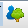
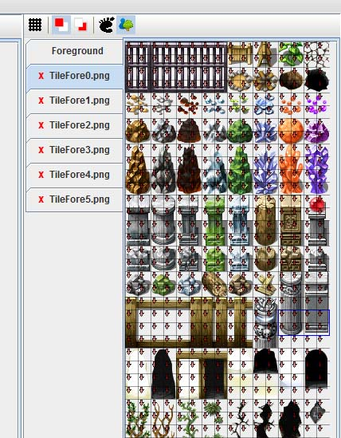

Step 2-3. 전경 설정
후경을 꾸며 보았습니다. 이제 후경에 전경을 배치해 보도록 하겠습니다.
일단 탭을 후경에서 전경 탭으로 변환 시키도록 합시다.
전경탭 버튼을 누릅니다()
전경도 후경도 선택하고 캔버스에 그려 넣을수 있습니다.
전경은 기본적으로 후경보다는 위에 나타나지만
캐릭터보다 위에 위치할 것인가에 대해서는 설정을 해줘야합니다.
다음 2-3장에서는 전경을 배치해 보도록 하겠습니다.
전경중 TileFore0.png 탭을 보도록 합시다.
그리드 모드는 해제하고 먼저 이동불가 지역을 설정 하도록 하겠습니다.
이동가능 지역 설정 버튼( )을 통해 모드를 바꿈니다. )을 통해 모드를 바꿈니다.
일단 맵에 기둥을 넣어 보도록 합시다.
일단 기둥에 두가지 를 설정 해야합니다.
1. 기둥의 경우 기둥 아래 부분은 캐릭터가 이동하지 못합니다.
2. 기둥의 윗 부분 경우 캐릭터가 이동 할 수 있지만 캐릭터 보다
윗쪽에 위치합니다.
- 전경탭에서 이동가능 모드를 설정 중
일단 전경 탭에서 이동 불가능 지역을 먼저 설정 합니다.
후경의 경우와 같이 드래그를 이용하여 선택합니다.
기둥의 아랫 부분, 어두운 문의 위쪽 부분 등을 캐릭터가
이동하지 못하는 구역으로 설정하였습니다.
그리고 기둥의 윗 부분은 캐릭터가 이동 할수 있도록 설정 되 있습니다.
다음으로 기둥 윗부분은 캐릭터 모다 위에 보이도록 해봅시다.
캐릭터보다 위 전경 선택 버튼() 을 누릅니다.

붉은 화살표 ↓은 해당 전경이 캐릭터 보다 아래 출력 됨을 의미합니다.
기둥의 윗 부분을 드래그로 선택하여 줍니다.
기둥의 윗 부분만 선택을 하여 녹색 화살표 ↑으로 바꿨습니다.
이것은 기둥의 윗 부분은 캐릭터 보다 위에 보이는 것을 의미합니다.
이제
1. 기둥의 경우 기둥 아래 부분은 캐릭터가 이동하지 못합니다.
2. 기둥의 윗 부분 경우 캐릭터가 이동 할 수 있지만 캐릭터 보다
윗쪽에 위치합니다.
두가지 조건에 만족하는 기둥을 타일셋에서 설정했습니다.
캐릭터보다 위 전경 선택 버튼() 을 다시 눌러 모드를 해제하고
기둥을 드래그로 선택하여 도장 방식을 이용하여 맵에 그려 넣어 보겠습니다.
- 기둥을 그려 넣은 모습
전경으로 기둥을 넣어 봤습니다.
이제 같은 방식을 이용하여 조금 더 꾸며 보겠습니다.
균열을 그려 넣었습니다. 중간에 있는 기둥 왼쪽에 큰 균열은 이동 불가 모드로 설정해서
이동 할수 없도록 하였습니다. 그리고 균열은 모두 캐릭터보다 아래에 위치하도록 했습니다.
위쪽 벽에는 문을 그려 넣었습니다.
주의!
지금까지 전경과 후경을 이용하여 맵을 그려봤습니다.
여기서 주의 할 점이 있습니다.
전경은 후경위에 겹처 보이게 됩니다.
그렇기 때문에 만약 전경과 후경 둘중 한 곳이라도 이동불가로 설정되 있으면 그곳은
캐릭터가 이동하지 못하게 됩니다.
즉,
후경 이동 가능, 전경 이동 가능 -> 이동가능
후경 이동 불가, 전경 이동 가능 -> 이동 불가
후경 이동 가능, 전경 이동 불가 -> 이동 불가
후경 이동 불가, 전경 이동 불가 -> 이동 불가
또한, 보이는 시점에서는 전경의 설정에 따라
가장 바닥 후경 -> 캐릭터 -> 캐릭터보다 위의 전경
가장 바닥 후경 -> 캐릭터 보다 아래 있는 전경 -> 캐릭터
로 설정이 됩니다.
이상으로 맵을 그렸습니다. 이런식으로 맵을 작성할 수 있습니다.
타일 셋이 없는 경우에는 외부에서 jpg, png, gif 를 불러와서 타일셋으로 사용 할수 있습니다.
이것은 메뉴얼을 참조 하시면 됩니다.
다음 장에서는
맵 위를 돌아다닐 캐릭터와 몬스터 NPC를 만들어 보도록 하겠습니다.
|